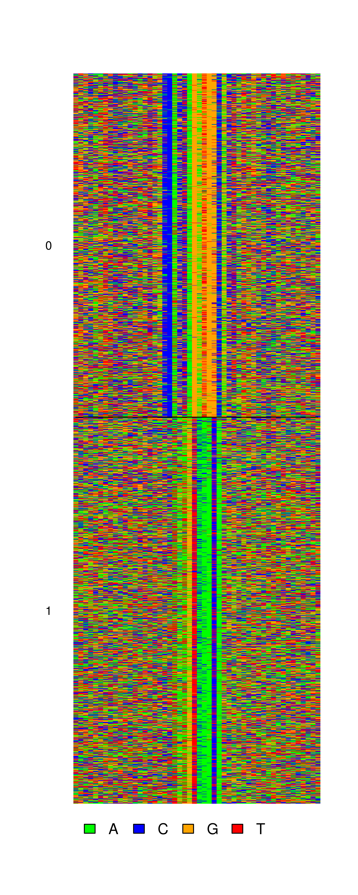
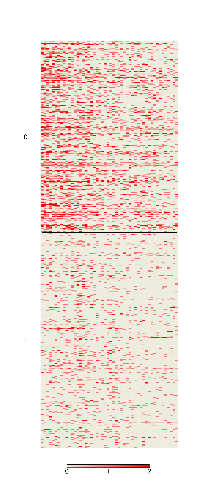
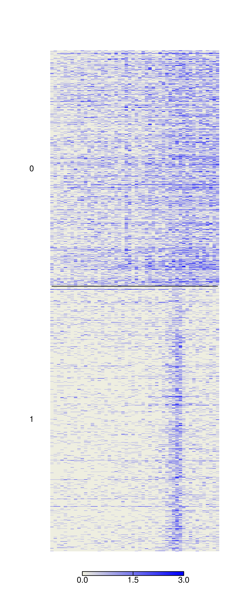
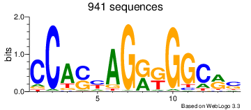
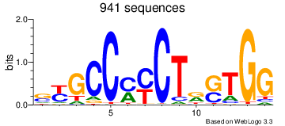
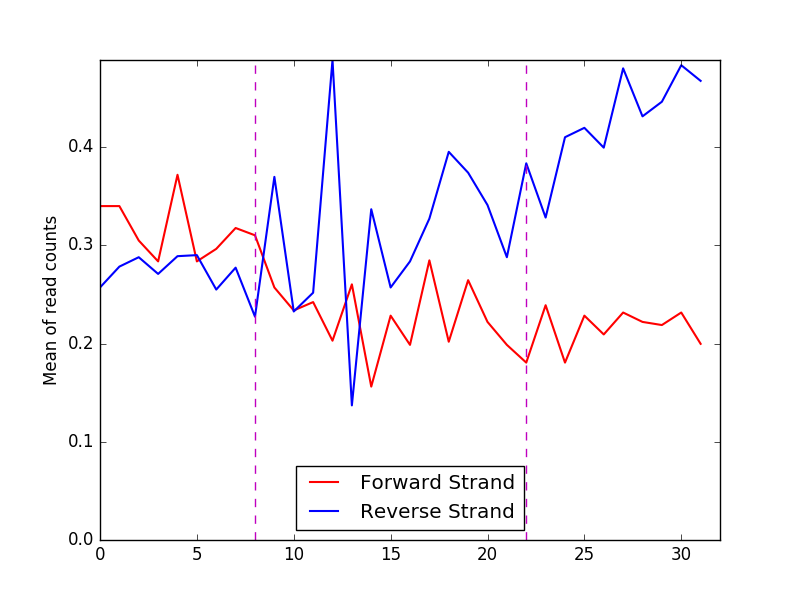
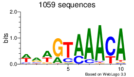
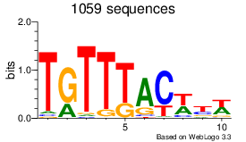
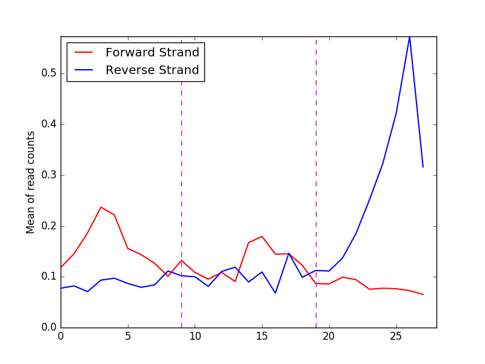

Output for model with 2 modes
Sequence alignments

Positive strand reads

Negative strand reads

For details about the sequences and the modes please refer to
info.txt
Motif logos and read profiles:
Motif
Motif reverse complement
Reads





